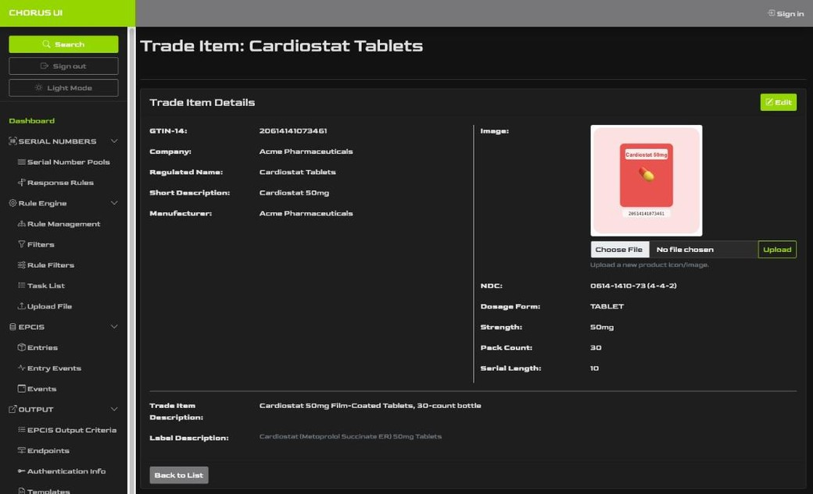
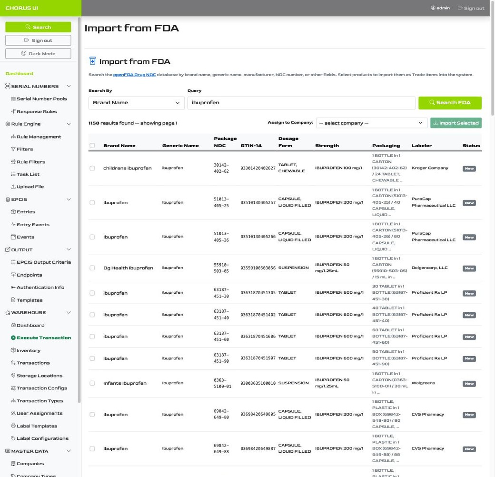
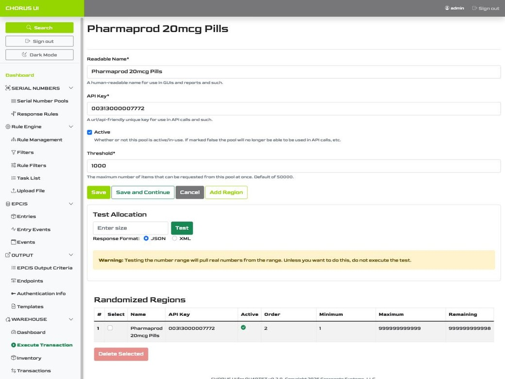
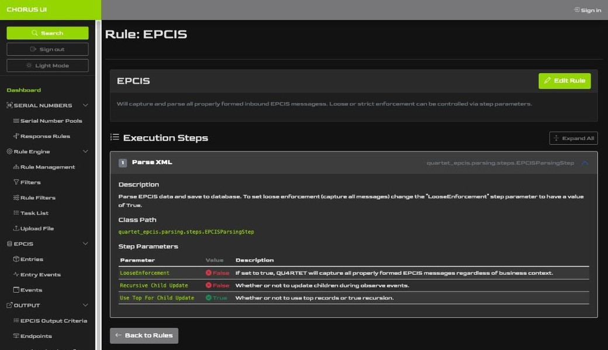

Search any EPC and see its full history — down to a live map of its last known location.
Chorus UI is the enterprise GUI Gracenote Systems built on top of QU4RTET.
Master data, FDA-sourced product import, serial number management, EPCIS traceability, and a full warehouse floor — all in one role-based interface. Chorus UI is sold by Gracenote Systems to any QU4RTET customer, and it's included free when we handle your QU4RTET hosting and implementation.
Search any EPC and see its full history — down to a live map of its last known location.
Every trade item, company, and location your serialization program depends on lives in a single, structured record — not spreadsheets, not tribal knowledge. Chorus UI gives operators a clean interface to manage the master data that QU4RTET's rule engine and EPCIS capture depend on to run correctly.

Manually keying in NDC numbers, dosage forms, and labeler data is slow and error-prone — and in a regulated industry, errors are expensive. Chorus UI's FDA import tool queries the openFDA Drug NDC database live, so your master data starts accurate.

One search, over a thousand matching NDC records — ready to import.
Running out of serial numbers mid-shift stops a production line. Chorus UI gives you visibility into every number pool — how it's configured, how fast it's depleting, and a safe way to test it before it's trusted with real inventory.

Under the hood, Chorus UI is a front end on QU4RTET's rule engine and EPCIS core — surfaced as something an operator can actually read. Every capture rule, every event, and every entry's full hierarchy is a click away, with the auditability regulated supply chains require.

This is where Chorus UI earns its keep: the Warewolf warehouse module turns physical operations into compliant EPCIS events, automatically. Operators tap through guided transactions; the traceability record writes itself.

Every screen in Chorus UI — search, warehouse execution, master data, all of it — reflows cleanly on a phone or tablet. No separate mobile app, no pinch-and-zoom required.

EPCIS traceability & live location, on your phone

Warehouse transactions, run from the floor

Master data, one tap away
Host or implement QU4RTET with Gracenote Systems and Chorus UI comes included — free, full stop. Already running QU4RTET elsewhere and just want the best GUI on top of it? We'll happily sell you Chorus UI standalone.
Running QU4RTET on your own infrastructure, or hosted elsewhere? Chorus UI is available as a standalone license — licensed, deployed, and supported directly by Gracenote Systems.
When Gracenote Systems handles your QU4RTET hosting and implementation, Chorus UI is included at no additional cost — one partner, one bill, the enterprise interface built in from day one.
Tell us about your QU4RTET setup and we'll walk you through Chorus UI — and what it looks like to get it free.
info@gracenote-systems.comWe typically respond within one business day.